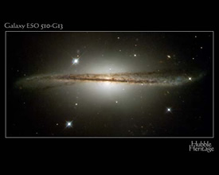
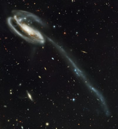
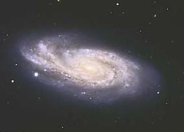

The adjective ‘disturbed’ refers to the physical (rather than mental) state of a galaxy. Disturbed galaxies have a morphology that has been altered by an interaction with another galaxy. Disturbances can take many forms including; warps, tidal tails and asymmetries. Some examples are shown below:
|

The galaxy ESO 510-13 is a disturbed galaxy exhibiting a pronounced warp in its disk.
Credit: STScI/NASA |

UGC 10214 is a disturbed galaxy that sports a huge tidal tail – a sign of a recent merger event.
Credit: NASA, H. Ford (JHU), G. Illingworth (UCSC/LO), M.Clampin (STScI), G. Hartig (STScI), the ACS Science Team, and ESA |

NGC 908 appears to be an isolated galaxy, i.e. there does not appear to be any galaxies of significant size within its immediate neighbourhood. That it is also a disturbed galaxy is odd because such disturbances are normally the sign of an interaction with another galaxy. It is possible that the galaxy responsible is hiding behind the NGC 908.
Credit: Anglo-Australian Observatory, Photograph by S. Lee, C. Tinney and D. Malin. |
The importance of interactions between galaxies has only recently been realised. In particular, disturbances to galaxies provide astronomers with a means to investigate both ongoing and recently completed interactions, and can also be used to probe the dynamics of the galaxies involved.